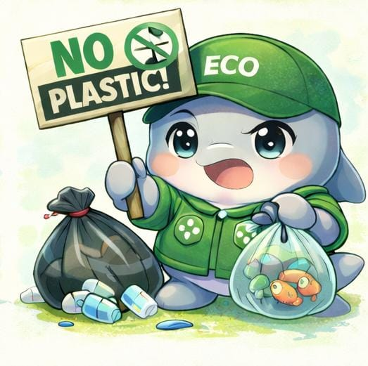

"Sampahmu adalah tanggung jawabmu. Mari belajar mengelola agar tidak menjadi bencana."
Sejak kamu membuka halaman ini, sudah ada sekitar:
Kg sampah plastik yang dihasilkan di seluruh dunia.
Halo! Aku Fin, si Pesut Mahakam.
Tahukah kamu? Aku dan keluargaku di Sungai Mahakam kini terancam punah karena limbah plastik. Yuk, bantu aku menjaga rumah kita tetap bersih!
Plastik adalah sampah masif. Ratusan ton berputar setiap jam di dunia. Kami fokus pada plastik minuman (botol & gelas) karena intensitas penggunaannya yang sangat tinggi.
Plastik tidak hilang, mereka hancur menjadi partikel kecil (mikroplastik) yang merusak ekosistem laut dan masuk ke rantai makanan manusia.
| Benda Plastik | Estimasi Waktu Terurai |
|---|---|
| Botol Minuman (PET) | 450 Tahun |
| Sedotan Plastik (PET) | 200 Tahun |
| Kantong Kresek (LDPE) | 10 - 20 Tahun |
| Gelas Plastik (PET) | 50 Tahun |
| Wadah Styrofoam (PS) | Tidak Terbatas |

Mengenal Jenis Plastik:
PET, HDPE, PVC, LDPE, PP, PS.
Umumnya digunakan untuk botol minum sekali pakai. Sulit terurai (450 tahun).
Lebih kuat dan tahan panas, biasanya digunakan untuk botol susu atau detergen.
Plastik yang sulit didaur ulang dan mengandung zat kimia berbahaya.
Lentur dan kuat, digunakan untuk kantong kresek. Butuh 10-20 tahun untuk terurai.
Jenis plastik terbaik untuk tempat makanan/minuman karena tahan panas.
Digunakan untuk Styrofoam. Sangat berbahaya karena tidak bisa terurai secara alami selamanya.